Pour sauvegarder une copie ou charger un spectacle, clicker l'icône [Save].
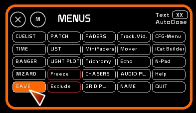
La fenêtre Save s'ouvre en défaut sur le le menu de sauvegarde binaire classique.
Si vous désirez passer en mode import export clicker [BINARY] pour changer de mode .
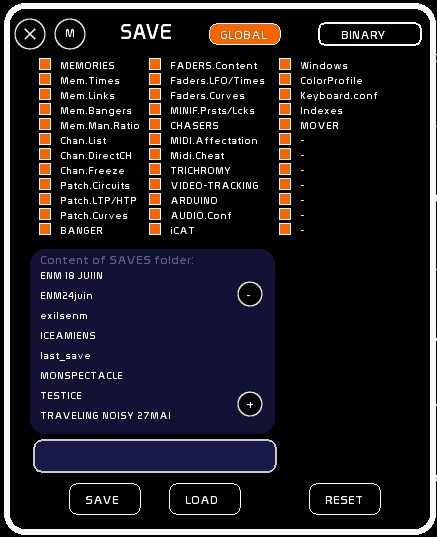
Il y a deux types de données permettant des sauvegardes chargements de spectacles:
Il y a plusieurs type d'export:
Les spectacles sont sauvés dans le dossier SAVES de White Cat.
A chaque ouverture, le spectacle chargé est last_save. Il est contenu dans le dossier /saves/last_save/. Last_save est donc la sauvegarde de travail.
Lorsque vous enregistrez une mémoire, changez le patch, etc… ces modifications sont faites en mémoire vive.
En faisant [Ctrl-S] ( sauvegarde rapide ) ou en quittant White Cat, les données sont alors écrites dans la sauvegarde de travail: last_save.
En utilisant le menu [SAVE], vous ne faites qu'enregistrer dans un autre dossier dont vous spécifiez le nom le spectacle chargé en mémoire vive ( donc last_save).
Les actions de sauvegarde sont donc juste un back-up, où l'on sauve un exemplaire de la conduite sous un autre nom.
Il est conseillé de sauver manuellement sous un autre nom votre spectacle, lorsque de grandes étapes ont été franchies ( patch, encodage mémoires, affinage des mémoires fait pendant la représentation, etc…).
Lorsque l'on quitte classiquement White Cat, une sauvegarde est faite dans last_save, donc dans la sauvegarde de travail. Le contenu du back-up n'est absolument pas touché.
On peut choisir de charger ce back-up en binaire, soit de manière complète, soit de manière partielle ( ne recharger que le patch, ou que les commandes midi, ou que les mémoires, etc…).
On peut importer le contenu d'une conduite binaire venant de schwartzpeter.
Pour ce, placer le dossier de la sauvegarde schwartzpeter voulue dans WhiteCat/import_export/:
- par ex le dossier EURYDICE present dans schwartzpeter/saves/
- vous aurez donc le dossier whitecat/import_export/EURYDICE/
L'import d'une conduite schwartzpeter est extrêmement basique et permet du coup l'import de toutes les versions de schwartzpeter.
En important une conduite schwartzpeter vous importez:
-les mémoires
-les autogo
-le descriptif mémoires
-les temps
-le patch
-le contenu des shadow subs ( pas les shadow groups !) qui est reporté sur les faders avec les niveaux correspondant.
Il s'agit d'export ou d'import de données. A ce titre, ces fichiers sont sauvés ou lus depuis le dossier import_export. Pour importer un fichier ou récupérer un export, aller dans le dossier WhiteCat/import_export/.
White Cat sauve et charge des spectacles en ASCII. Le protocole ASCII est une norme qui permet à des machines différentes d'échanger les données des spectacles entre marques différentes.
Au chargement d'un import ASCII l'ensemble du spectacle en mémoire ( last_save) sera effacé.
Sont lus:
-les mémoires
| CUE 1.0 | La mémoire |
| TEXT DESCRIPTIF MEMOIRE 1 | le descriptif |
| UP 1.0 | le temps de montée de cette mémoire |
| DOWN 5.0 | le temps de descente |
| $$WAIT 0 | White Cat considère en autogo cette mémoire sur un temps supérieur à 0 |
| CHAN 7/H52 10/H61 35/H4C 100/HAE | Les circuits avec leurs niveaux en hexadécimal. |
Il est possible que sur certains exports ascii, la console génère une information des niveaux des circuits avec la syntaxe suivante: 7@H52 ou 7=H52. Auquel cas, utiliser la fonction de remplacement du note-pad, et remplacer @H par /H.
la syntaxe /H est utilisée par AVAB et ADB. Choix est donc fait dans White Cat de rester sur un protocole d'importation ASCII limité à cette syntaxe.
-le patch électronique sans les courbes
| PATCH 1 6<1/HFF 21<2/HFF | Le patch de l'univers 1, gradateur 1 affecté au circut 6 à 100%, gradateur 2 affecté au circuit 21 à 100% |
Chez certains constructeurs, notamment RVE, la syntaxe pour le patch est 1<1@Hff au lieu de 1<1/Hff. Utiliser le note-pad comme vu plus haut.
-les subs contenant des circuits
| SUB 1 | Le Sub 1 |
| TEXT le descriptif du sub | Le texte |
| UP 5 | le temps de montée du sub |
| DOWN 5 | le temps de descente du sub |
| CHAN 17/HFF 18/HFF 19/HFF 20/HFF | les circuits contenus |
White Cat reçoit les SUBS jusqu'au Sub 288 ( 48 faders par 6 docs). Le Sub 49 sera donc placé en Fader 1, Dock 2. Le Sub 96 en Fader 48, Dock 2. Le Sub 97 en Fader 1, Dock 3 etc…
AVAB semble utiliser la syntaxe GROUP en place de SUB, permettant de charger des mémoires. Cependant le temps n'est pas inclus. Pour l'instant, la syntaxe GROUP n'est pas prise en charge.
Vous pouvez sauver en sauvegarde rapide dans le dossier last_save via un [CTRL][S].
Lorsque vous quittez WhiteCat une sauvegarde automatique est faite:
- si vous clickez l'icône [QUIT]
-ou utilisez le raccourci clavier [CTRL][F12].
Si vous voulez quitter SANS sauvegarder dans last_save, utilisez le raccourci clavier [SHIFT][F12].
Assurez vous que [GLOBAL] est bien affiché. S'il ne l'est pas, votre spectacle ne sera pas chargé ou sauvegardé de manière complète. Toutes les cases cochées permettent aussi de vérifier que la sauvegarde se fera bien sur tous les types de données.
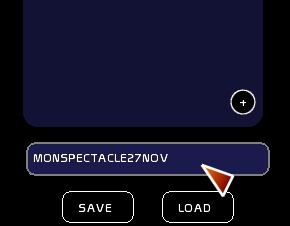
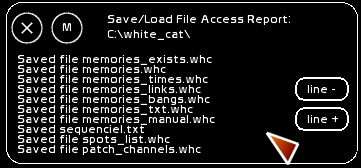
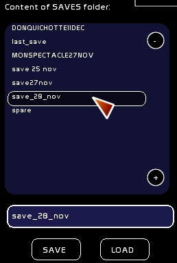
Il est possible de sauver ou charger de manière sélective un spectacle ( ne prendre ou sauver que les mémoires, ou le patch, ou la configuration midi, etc…).
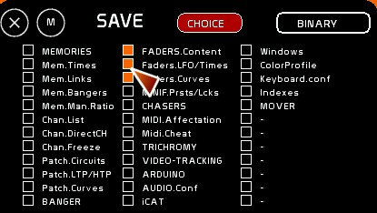
Le chargement binaire sélectif est certainement celui que vous allez utiliser le plus, pour chercher:
etc…
Pour celà,
Grâce à ces sauvegardes sélectives, vous pouvez sauver uniquement des fragments séparés:
que vous pourrez charger à la volée, fonction de vos besoins.
Les dossiers sont moins lourds.
La convention à utiliser pour vos sauvegardes est de nommer le fichier LAYOUT suivi d'un descriptif simple.
Dans le cas de presets midi faisant appel à une affectation précise, mettre dans le dossier du layout le fichier de l'éditeur utilisé pour configurer votre périphérique midi.
En mode Binaire, vous disposez de 4 presets personnalisables, où enregistrer une combinaison à votre choix. Ces presets vous permettront d'aller chercher rapidement dans un autre spectacle une sélection de fichiers:
par exemple:
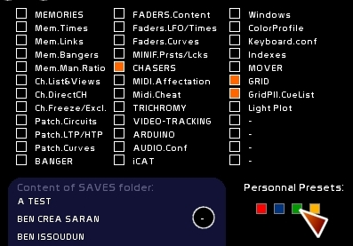
On peut remettre à plat:
Ceci n'affectera absolument pas les spectacles enregistrés sur le disque dur.
Clicker [BINARY] pour passer la fenêtre [SAVE] en mode [IMP-EXPORT].
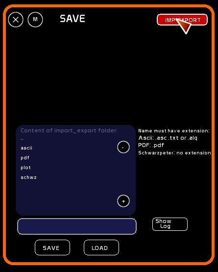
Le répertoire import_export est situé à coté du répertoire save, dans le dossier white_cat.
Il y a 4 sous dossiers dans ce répertoire import-export:
Ces dossiers permettent de trier les données utilisées dans l'import et l'export:
Vous poserez donc les conduites ASCII à importer dans le dossier ASCII, et WhiteCat génèrera dans ce dossier ses exports ASCII.
Si vous désirez charge un spectacle Schwartzpeter, vous le poserez dans le dossier SCWHZ
PDF reçoit les exports PDF, et PLOT les images issues de l'export image du plan lumière.
Vous pouvez réenrouler le répertoire en clickant la première case : ..
Les opérations en import export dépendent du type de données:
Tout autre fichier déposé dans le dossier import export ne sera pas listé.
Les 3 types de données pour:
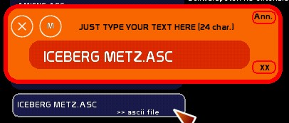
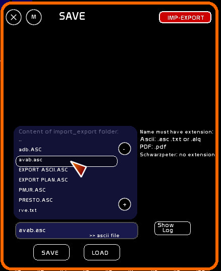
Hors WhiteCat:
Puis dans WhiteCat:
L'export PDF permet d'exporter une conduite complète de votre spectacle. C'est le document de référence à archiver, notamment sur les spectacles complexes.
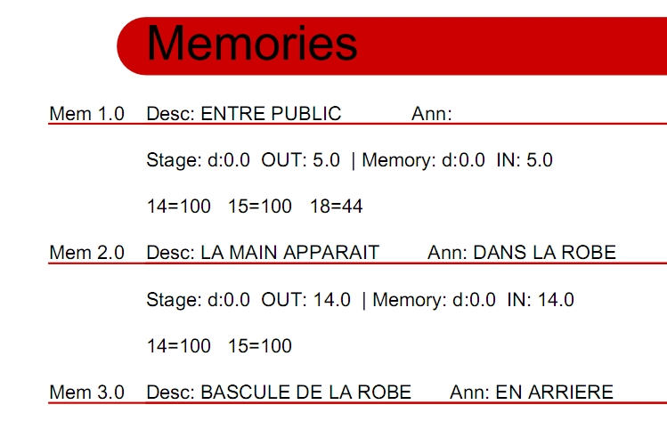
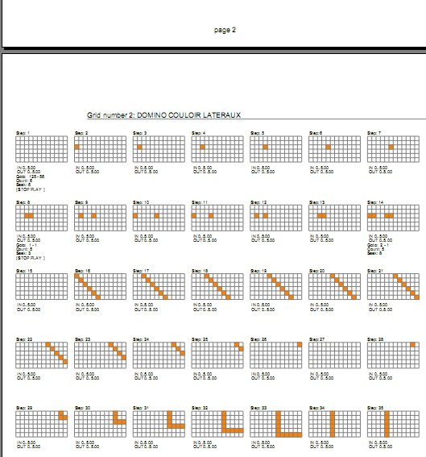
Lorsque l'extension entrée correspond à un pdf, un menu sélectif s'affiche, permettant de définir quels éléments vous allez exporter dans le PDF. Cette liste des information est sauvée dans chaque spectacle. Ell vous permet par spectacle de définir un archivage personnalisé ( utilisation arduino ou pas, export midi ou pas, vue du patch, etc…).
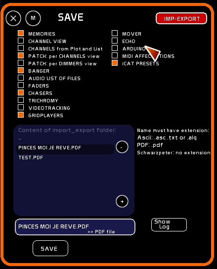